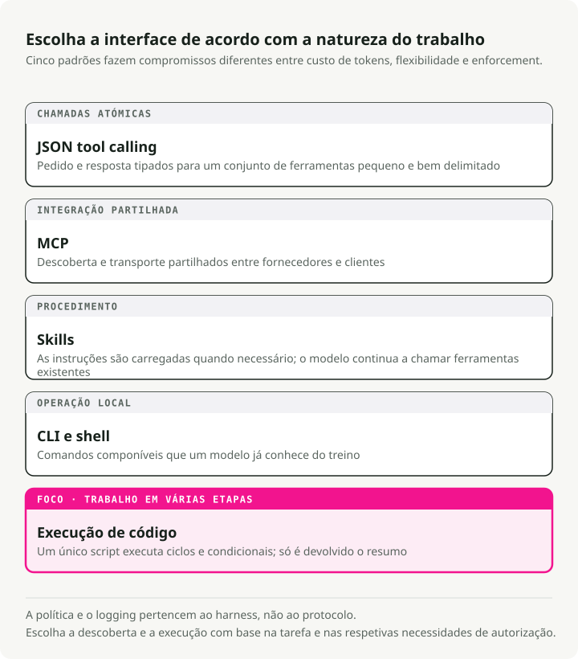
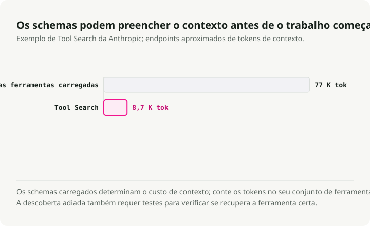
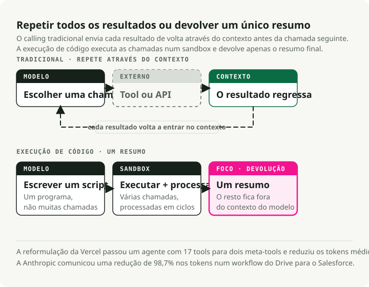
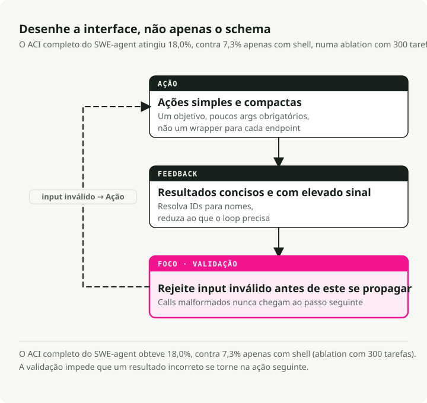

Tradução automática
Este artigo foi traduzido automaticamente a partir da versão original em inglês.
Utilização de Ferramentas de Agente de IA em 2026: MCP, CLI, Habilidades e Execução de Código
Parte 3 da série Engenharia da Stack Agente
Parte 1 laços de raciocínio cobertos, Parte 2 memória ocupada. Este artigo aborda o uso de ferramentas por agentes de IA: como os agentes interagem com o mundo e por que o design das ferramentas é mais importante do que a maioria das equipas percebe.
A situação relativa às ferramentas mudou entre 2025 e 2026. O MCP tornou-se o padrão de facto para serviços externos, mas as equipas de produção continuam a deparar-se com as suas falhas de segurança e o custo adicional associado aos tokens. A outra abordagem que está a ganhar popularidade são os agentes que escrevem e executam código em vez de chamar ferramentas definidas em JSON. A Anthropic registou uma redução de 98,7% nos tokens num fluxo de trabalho representativo, e o artigo científico da CodeAct indica taxas de sucesso nas tarefas 20% mais elevadas.
Este artigo compara o chamamento de ferramentas via JSON, o MCP, as Skills, as ferramentas CLI e a execução de código, mapeando-os em seguida para os princípios de design da Interface Agente-Computador (ACI) que aplico no Agente de Análise de Mercado.
TL;DR: Existem cinco modalidades de ferramentas para agentes de IA, cada uma com as suas vantagens específicas. A stack prática para 2026: competências especializadas, CLI como padrão, MCP para serviços externos e execução de código para orquestração em vários passos. Os princípios de design ACI do SWE-agent orientam todas estas abordagens.
Cinco formas como os agentes de IA utilizam ferramentas
In Parte 1Mostrei como os ciclos de raciocínio dos agentes de IA determinam como pensar. As modalidades de ferramenta, por sua vez, decidem como agir. Existem atualmente cinco abordagens distintas, cada uma com diferentes compromissos em termos de custo de tokens, flexibilidade e segurança.

1. Chamadas de Ferramentas JSON — O Ponto de Partida
O padrão original: define-se os esquemas das ferramentas em formato JSON, o LLM gera chamadas de função estruturadas e o seu código executa-as. Este método é amplamente compreendido e funciona bem para conjuntos pequenos de ferramentas.
# Traditional tool definition — each tool consumes ~550-1,400 tokens (Apideck benchmark)
tools = [
{
"name": "get_stock_price",
"description": "Get the current stock price for a ticker symbol",
"input_schema": {
"type": "object",
"properties": {
"ticker": {"type": "string", "description": "Stock ticker (e.g., NVDA)"}
},
"required": ["ticker"]
}
}
]
Com 5-10 ferramentas, isto é aceitável. O problema está na escala: cada definição de ferramenta tem um custo. 550–1.400 tokens. Com 20 ferramentas, já se gastam entre 15 e 25 mil tokens antes mesmo de o agente começar a raciocinar.
2. MCP — O Padrão Universal (Com Ressalvas)
O Model Context Protocol é o padrão no qual a maioria dos fornecedores concordou. A Anthropic doou-o à Linux Foundation no âmbito da Agentic AI Foundation (AAIF) em dezembro de 2025, em parceria com a OpenAI e a Block, contando com o apoio da Google, Microsoft e AWS como membros platinados. A OpenAI adicionou suporte a MCP à sua Responses API. Atualmente, existem mais de 10.000 servidores MCP ativos e mais de 97 milhões de downloads mensais de SDKs.
Onde o MCP se destaca: integração entre SaaS de diferentes fornecedores (Figma, Notion, Salesforce), governança empresarial com registos de auditoria, serviços que não dispõem de equivalentes via CLI, e ambientes que necessitam de orquestração OAuth. Para estes casos de uso, o MCP é sem dúvida a escolha ideal.
A realidade em produção é um pouco mais complexa do que indicam esses números superficiais.
A superfície de segurança é o primeiro problema. O Projeto MCP vulnerável Deteta 50 vulnerabilidades em servidores MCP, das quais 13 são classificadas como Críticas, identificadas por 32 investigadores de segurança. As categorias de ataque incluem injeção de prompts, falhas na validação de entrada, lacunas de autenticação e falhas de segurança de rede. O primeiro servidor MCP malicioso em cenário real foi lançado em setembro de 2025: um pacote chamado postmark-mcp que enviava cópias ocultas de todos os e-mails enviados para o endereço do atacante, afetando cerca de 300–500 organizações antes de ser detetado.
A envenenamento de ferramentas é o tipo de ataque que mais me preocupa. A Invariant Labs demonstrou Essas ferramentas MCP envenenadas conseguem extrair dados mesmo quando nunca são invocadas. Basta o modelo ler os metadados da ferramenta para desencadear o ataque. Testes de desempenho MCPTox Ao testar 20 agentes de LLM contra 45 servidores MCP do mundo real, verificou-se que as taxas de sucesso dos ataques atingiram valores tão elevados quanto 72,8%.
O overhead de tokens é o problema operacional. Uma equipa que gere servidores MCP para o GitHub, Slack e Sentry (~40 ferramentas no total) constatou 55.000 tokens de definições de esquema injetadas antes mesmo de o utilizador fazer qualquer pergunta. Outro problema relatado 143.000 de 200.000 tokens disponíveis (72%) consumido exclusivamente pelas definições de ferramenta.

A mitigações funcionam, mas confirmam o problema subjacente. Da Anthropic’s A Ferramenta de Pesquisa de Ferramentas reduz o overhead do esquema em 85%. O carregamento dinâmico de ferramentas (3–5 ferramentas relevantes por tarefa) permite uma redução de 96%. Trata‑se de soluções alternativas para um protocolo que não foi concebido tendo em conta orçamentos de tokens.
3. Habilidades (SKILL.md) — Especialização, não Execução
No final de 2025, ocorreu a padronização das habilidades de agente como formato aberto (lançado em outubro de 2025 e publicado como padrão aberto em dezembro de 2025). A distinção é importante: as ferramentas fornecem capacidades (o que os agentes conseguem fazer), enquanto as habilidades conferem especialização (o que os agentes sabem sobre como realizar tarefas complexas).
O padrão SKILL.md define uma habilidade como um ficheiro markdown com frontmatter em YAML:
---
name: deploy
description: Deploy the application to production
argument-hint: "[environment]"
user-invocable: true
---
Deploy the application to the $0 environment (default: staging).
Steps:
1. Run the test suite
2. Build the production bundle
3. Deploy using the deploy script
4. Verify the deployment health check
As competências utilizam divulgação progressiva: apenas os metadados (~100 tokens para o frontmatter YAML) são carregados na inicialização, e as instruções completas são carregadas quando a competência é ativada. Compare isso com o MCP, onde cerca de 40 ferramentas provenientes de serviços típicos consomem ~55.000 tokens Antes mesmo de iniciar qualquer raciocínio, a adoção multiplataforma em março de 2026 já inclui o Claude Code, o OpenAI Codex CLI, o Cursor, o GitHub Copilot, o Gemini CLI, o Goose, o Windsurf e o Roo Code, o que representa uma tendência clara. Victor Dibia realizou uma exploração na sua análise da transição de ferramentas para ações de agente impulsionadas por código.
Quando as competências são decisivas: transferência de conhecimento especializado em determinada área, procedimentos complexos com várias etapas, fluxos de trabalho recorrentes como migrações de bases de dados ou integrações de pagamento, e qualquer tarefa em que o agente precisa saber como fazer algo em vez de apenas o quê fazer.
4. CLI/Bash — A Renascença do Unix
O terminal Unix revelou-se a interface de agente mais eficiente em termos de uso de tokens. A diferença é significativa: um manifesto de ferramenta CLI custa cerca de 100 tokens, enquanto os esquemas equivalentes de servidores MCP consomem 50.000+ tokens. Isso representa uma 4-32x de diferença medida pelo Scalekit em 75 execuções de benchmark (32 vezes para tarefas como deteção da linguagem do repositório e verificação de licenças).
Os modelos são falantes nativos de CLI. Os seus dados de treino incluem milhares de milhões de interações com terminais provenientes do Stack Overflow, de repositórios do GitHub e de documentação. Eles compreendem isto de forma nativa. git, docker, kubectl, gh, curl, e jq sem quaisquer definições de esquema.
Guia de Ugo Enyioha "Como criar ferramentas CLI que os agentes de IA realmente querem utilizar" codificadas oito regras de design:
- A saída estruturada é obrigatória — suporte
--json - Códigos de saída fazem parte do fluxo de controle — utilize códigos distintos para diferentes tipos de erro.
- Os comandos devem ser idempotentes.
- Autodocumentação.
--helpcom exemplos realistas - Projeto para composabilidade —
--quietpara valores simples, suporte a stdin - Fornecer
--dry-rune--yesflags - Suporte à introspecção de versões
- Tratamento da autenticação através de variáveis de ambiente
Os compromissos são reais. A CLI carece da segurança de tipos do MCP, da orquestração integrada de OAuth, da descoberta de ferramentas e do registo de auditoria. O padrão que vejo a maioria das equipas adotar é: a CLI como padrão para desenvolvimento e operações locais, e o MCP para integração com serviços externos e governação empresarial.
5. Execução de Código — A Grande Mudança
Esta é a alteração nas ferramentas de agente que considero mais significativa. Em vez do LLM emitir JSON estruturado para invocar funções predefinidas uma de cada vez, o agente escreve um script completo em Python ou bash que chama várias ferramentas, processa os resultados com laços e condições e devolve apenas resumos finais para o contexto do modelo.
Anthropic formalizou isto com Chamada de Ferramentas Programáticas (PTC), agora disponível na API do Claude. A base académica é a Artigo CodeAct (Wang et al., ICML 2024), que realizou testes em 17 LLMs e constatou que as ações baseadas em código alcançaram taxas de sucesso nas tarefas até 20% mais elevadas e exigiram 30% menos passos em comparação com as alternativas em formato JSON.

A evidência de produção: Vercel reconstruiu o seu agente d0 de texto para SQL ao remover 80% das suas ferramentas (de 15 para 2): ExecuteCommand e ExecuteSQL). A taxa de sucesso das tarefas aumentou de 80% para 100%, o tempo de execução diminuiu 3,5 vezes e o consumo de tokens caiu 40%. A forma como eles expressam isso é: “Os melhores agentes podem ser aqueles que dispõem dos menos recursos.”
- A Cloudflare desenvolveu o “Code Mode”, permitindo que os agentes escrevam TypeScript para chamar a sua API em vez de definirem esquemas de ferramentas, o que reduz o overhead de contexto. A sua justificação é a seguinte: “Os LLMs dispõem de uma enorme quantidade de código TypeScript do mundo real no seu conjunto de treino, mas apenas um pequeno conjunto de exemplos artificiais de chamadas a ferramentas.” Documentação do PTC da Anthropic. As ferramentas tradicionais utilizadas para análise de despesas exigem mais de 20 passagens de inferência separadas, uma para cada membro da equipa, sendo que todos os dados intermediários são processados no contexto. Um fluxo de trabalho que consumia cerca de 150.000 tokens com chamadas diretas à ferramenta foi reimplementado para apenas ~2.000 tokens, o que representa uma redução de 98,7%. Com a execução de código, o agente escreve um único script:
# Agent generates this code, executes in sandbox
import json
members = get_team_members("engineering")
over_budget = []
for m in members:
expenses = get_expenses(m["id"], "Q3")
total = sum(e["amount"] for e in expenses)
if total > 5000:
custom = get_custom_budget(m["id"])
limit = custom["limit"] if custom else 5000
if total > limit:
over_budget.append({"name": m["name"], "spent": total, "limit": limit})
# Only this final summary returns to the LLM context
print(json.dumps(over_budget))
O LLM apenas vê o resumo JSON final, e não as milhares de linhas de despesa processadas no ambiente de teste. Eficiência em termos de tokens, composabilidade nativa (laços e condicionais disponíveis sem custo adicional), tratamento eficaz de erros (try/except em vez de raciocínio em linguagem natural sobre erros), e privacidade (dados sensíveis permanecem na sandbox), todos melhoram simultaneamente.
Quando a chamada de ferramentas via JSON ainda faz sentido: operações atómicas únicas, ambientes sem infraestrutura de sandboxing, modelos mais pequenos com capacidades limitadas de geração de código, ou requisitos de auditoria que exigem o registo de cada chamada individual à ferramenta.
Tabela de comparação de chamadas de ferramentas por agente AI
| Dimensão | Chamada de Ferramenta JSON | MCP | Habilidades (SKILL.md) | CLI/Bash | Execução de Código (PTC) |
|---|---|---|---|---|---|
| Ideal para | Ações simples e únicas | SaaS multi-fornecedor | Especialização em domínio | Fluxos de trabalho de desenvolvimento, operações locais | Orquestração em vários passos |
| Custo de tokens | Médio (esquemas por pedido) | Muito elevado (550-1.400/ferramenta) | Muito baixo (~100 tokens) | Quase zero | Baixo (2 ferramentas meta) |
| Taxa de sucesso da tarefa | Linha de base | Semelhante à linha de base | N/A (camada de especialização) | Mais elevado para tarefas nativas da CLI | +20% em comparação com a linha de base |
| Composabilidade | Baixo (sequencial) | Baixo (sequencial) | Alto (conhecimento procedural) | Alto (canais, encadeamento) | Muito alto (código nativo) |
| Superfície de segurança | Moderado | Alto (50+ CVEs) | Baixo (baseado em prompt) | Alto (acesso ao shell) | Alto (necessita de sandboxing) |
| Complexidade de configuração | Médio (implantação no servidor) | Muito baixo (markdown) | Médio (infraestrutura de sandbox) | ||
| Latência por ação | 1 inferência/chamada | 1 inferência + transporte | 0 (injeção de contexto) | 1 inferência/chamada | 1 passo para N chamadas |
| Depuração | Bom (E/S estruturada) | Moderado (camada de transporte) | Excelente (visível) | Bom (código legível) |
A composabilidade, neste contexto, refere-se à facilidade com que várias operações podem ser encadeadas num fluxo de trabalho mais complexo. Um valor baixo indica que cada chamada à ferramenta requer uma comunicação separada com o LLM; já um valor alto significa que a modalidade suporta nativamente o encadeamento de resultados (pipes Unix, variáveis de código, passos procedimentais).
A Interface Agente-Computador (ACI) para ferramentas de agentes de IA
A expressão “Interface Agente-Computador” (ACI) foi cunhada por John Yang, Carlos E. Jimenez e colegas de Princeton nos seus Artigo sobre o SWE-agent (NeurIPS 2024). A ideia é simples: da mesma forma que os seres humanos se beneficiam de interfaces bem projetadas (HCI), os agentes de LM representam “uma nova categoria de utilizadores finais com as suas próprias necessidades e capacidades, que se beneficiariam de interfaces desenvolvidas especificamente para eles.” resultados de ablação Fiz a cópia de segurança. O SWE-agent, com o seu ACI completo, alcançou 18,0% no SWE-bench Lite, contra 7,3% apenas com uma shell Linux padrão — o que representa uma melhoria de 10,7 pontos percentuais graças ao design da interface por si só. A funcionalidade de verificação de conformidade por si só foi responsável por 3 pontos percentuais: 51,7% das edições feitas pelo agente apresentaram pelo menos um erro detetado pelo verificador antes que ele pudesse ser propagado.

Anthropic adotou o ACI como um conceito fundamental nos seus "Desenvolvimento de Agentes Eficazes" guia, listando-o como um dos três princípios fundamentais: “Elabore com cuidado a sua interface agente-computador através de documentação e testes exaustivos das ferramentas.” A orientação prática é a seguinte: “Uma regra prática consiste em considerar o esforço necessário para criar interfaces humano-computador e planejar investir o mesmo volume de esforço na criação de boas interfaces agente-computador.”
Os Quatro Princípios em Prática
1. As ações devem ser simples e fáceis de compreender. O erro mais comum é associar endpoints API de forma um-a-um. Em vez disso, list_users, list_events, create_event, implementar schedule_event que encontra a disponibilidade e agenda em uma única chamada. Em vez de read_logs, implementar search_logs que devolve apenas as linhas relevantes juntamente com o contexto.
2. As ações devem ser compactas e eficientes. Consolide as operações importantes em o menor número possível de ações. Em Agente de Análise de Mercado, combino a recolha de preços com métricas básicas num único get_stock_snapshot ferramenta, em vez de exigir chamadas separadas para o preço, o volume, o valor de mercado e o rácio P/E.
3. O feedback do ambiente deve ser informativo, mas conciso. Evite retornar HTML bruto ou payloads completos da API. Converta IDs enigmáticos em nomes semânticos. Os testes da Anthropic mostrou que a adição de um response_format Uma enum que permite aos agentes solicitar respostas concisas (~72 tokens) ou detalhadas (~206 tokens), com uma diferença de custo em tokens de 3 vezes, melhorou significativamente o desempenho em cenários reais.
4. As regras de segurança devem atenuar a propagação de erros. A deteção automática de erros ajuda os agentes a identificar e corrigir falhas rapidamente. Em SWE-agent, um editor de ficheiros personalizado com linting integrado rejeita automaticamente erros de sintaxe, detetando 51,7% dos erros de edição do agente antes que estes possam agravar-se. Aplico o mesmo princípio no Market Analyst Agent, validando os argumentos das ferramentas com esquemas Pydantic antes da execução:
from pydantic import BaseModel, Field, field_validator
class StockQuery(BaseModel):
"""Validated input for stock queries.
Pydantic catches malformed tickers before the API call,
preventing error propagation through the reasoning loop.
"""
ticker: str = Field(description="Stock ticker symbol (e.g., NVDA)")
period: str = Field(default="1mo", description="Time period: 1d, 5d, 1mo, 3mo, 1y")
@field_validator("ticker")
@classmethod
def validate_ticker(cls, v: str) -> str:
v = v.upper().strip()
if not v.isalpha() or len(v) > 5:
raise ValueError(f"Invalid ticker format: {v}")
return v
@field_validator("period")
@classmethod
def validate_period(cls, v: str) -> str:
valid = {"1d", "5d", "1mo", "3mo", "6mo", "1y", "5y"}
if v not in valid:
raise ValueError(f"Invalid period: {v}. Must be one of {valid}")
return v
Padrões de design para ferramentas de agentes de IA que funcionam eficazmente
Anthropic’s "Desenvolvimento de ferramentas eficazes para agentes" descrever as ferramentas de estruturas de guia como “um novo tipo de software que reflete um contrato entre sistemas determinísticos e agentes não determinísticos.” Eis os padrões que se consolidaram a partir da experiência em produção.
Tratar as Descrições de Ferramentas como Engenharia de Prompts
As descrições devem funcionar como Trata-se de um cenário em que são necessários pelo menos 3 a 4 períodos consecutivos para transmitir toda a informação relevante de forma clara e completa. Neste tipo de estrutura textual, é fundamental garantir que cada frase contribua de forma significativa para o entendimento do conteúdo abordado. Além disso, a organização em múltiplas frases permite uma melhor divisão lógica das ideias, facilitando a análise e a interpretação por parte dos leitores., abordando quando utilizar a ferramenta, parâmetros obrigatórios versus opcionais, formato de saída e casos limites. Nomenclatura com prefixos (asana_search, jira_search) tem “efeitos significativos” na precisão da seleção de ferramentas. Nos experimentos da Anthropic, as descrições de ferramentas otimizadas para o Claude superaram as escritas por especialistas em testes de avaliação.
# Bad: vague, no context for when to use
tools = [{
"name": "search",
"description": "Search for items",
}]
# Good: specific, with input examples and edge cases
tools = [{
"name": "stock_search_news",
"description": (
"Search for recent news articles about a specific stock or company. "
"Use this tool when the user asks about recent events, earnings, "
"announcements, or market-moving news for a specific ticker. "
"Returns up to 10 articles sorted by relevance. "
"For broad market news (not ticker-specific), use market_overview instead."
),
"input_schema": {
"type": "object",
"properties": {
"query": {
"type": "string",
"description": "Search query. Examples: 'NVDA earnings Q3 2025', 'Tesla delivery numbers'"
},
"max_results": {
"type": "integer",
"description": "Max articles to return (1-10, default 5)",
"default": 5
}
},
"required": ["query"]
}
}]
Testes internos mostrou que os exemplos de entrada (input_examples field) melhorou substancialmente a precisão no tratamento de parâmetros complexos.
Retornar Saída de Alto Sinal, Legível por Máquinas
Evite identificadores de baixo nível (uuid, mime_type). Resolva os IDs enigmáticos em nomes semânticos. Estruture a resposta de forma que o agente possa raciocinar sobre ela sem ter de analisar texto genérico:
# Bad: raw API response dumped to agent
def get_stock_price(ticker: str) -> dict:
response = api.get(f"/v1/quotes/{ticker}")
return response.json() # 500+ tokens of nested JSON
# Good: high-signal summary the agent can immediately reason about
def get_stock_price(ticker: str) -> dict:
data = api.get(f"/v1/quotes/{ticker}").json()
return {
"ticker": ticker,
"price": data["regularMarketPrice"],
"change_pct": round(data["regularMarketChangePercent"], 2),
"volume": data["regularMarketVolume"],
"market_cap_b": round(data["marketCap"] / 1e9, 1),
"pe_ratio": data.get("trailingPE"),
"summary": f"{ticker} at ${data['regularMarketPrice']:.2f} "
f"({'up' if data['regularMarketChangePercent'] > 0 else 'down'} "
f"{abs(data['regularMarketChangePercent']):.1f}%)"
}
Gestão de Erros no Design para Resiliência
O padrão que se mostrou eficaz em produção consiste em quatro camadas de tolerância a falhas:
- Tentativa de repetição com retrocesso exponencial para erros transitórios
- Cadeias de fallback para situações de indisponibilidade dos fornecedores
- Roteamento por classificação de erros — erros transitórios são retentados, erros recuperáveis por LLMs são devolvidos ao agente com contexto, e erros que exigem intervenção humana são escalonados
- Recuperação a partir de pontos de verificação para sobrevivência a falhas catastróficas
As equipas relatam que as falhas irreparáveis diminuíram de 23% para menos de 2% com esta abordagem de quatro camadas, conforme documentado em Padrões de resiliência das ferramentas da Anthropic.
from tenacity import retry, stop_after_attempt, wait_exponential
@retry(
stop=stop_after_attempt(3),
wait=wait_exponential(multiplier=1, min=2, max=10),
)
def call_stock_api(ticker: str) -> dict:
"""Fetch stock data with automatic retry on transient failures.
Layer 1: Exponential backoff handles rate limits and network blips.
If all retries fail, the error propagates to the agent with
enough context to decide whether to try a different approach.
"""
response = httpx.get(
f"https://api.example.com/v1/quotes/{ticker}",
timeout=10.0,
)
response.raise_for_status()
return response.json()
Aplicação Destes Padrões: O Agente de Análise de Mercado
Deixe-me mostrar como estes princípios se combinam no Agente de Análise de Mercado de Parte 1### Consolidação de Ferramentas
O artigo da Parte 1 apresenta a superfície simplificada com 5 ferramentas após esta refatoração. Antes dessa otimização, o design original contava com mais de 10 ferramentas: get_stock_price, get_company_metrics, get_market_cap, get_pe_ratio, get_volume, e assim por diante. Cada um deles era um revestimento simples em torno de um ponto final da API. O agente tinha de determinar qual combinação chamar para cada pedido.
Consolidei estes elementos em 5 ferramentas de alto nível, seguindo o princípio ACI de ações compactas e eficientes:
| Antes (10+ ferramentas) | Após (5 ferramentas) | Porquê |
|---|---|---|
get_stock_price + get_company_metrics + get_pe_ratio |
get_stock_snapshot |
Uma única chamada devolve tudo o que é necessário para a análise básica |
get_price_history + get_volume_history |
get_price_history |
Combinado com período e indicadores configuráveis |
search_news + search_press_releases |
search_news |
Pesquisa unificada com filtragem de fonte |
search_competitors + get_sector_data |
search_competitors |
Devolve os concorrentes com métricas relativas |
get_financials + get_balance_sheet + get_cash_flow |
get_financials |
Unificado com o parâmetro statement_type |
Isto reduziu significativamente a sobrecarga associada ao esquema de ferramentas e tornou a seleção de ferramentas pelo agente mais fiável, uma vez que existem menos opções ambíguas a considerar.
Saídas Estruturadas para Resultados de Ferramentas
Cada ferramenta no Market Analyst Agent devolve uma resposta validada por Pydantic. Isto aplica o princípio de restrições ACI na fronteira da ferramenta:
class StockSnapshot(BaseModel):
"""Structured tool response — the agent never sees raw API noise."""
ticker: str
price: float
change_pct: float
volume: int
market_cap_b: float
pe_ratio: float | None
summary: str # Human-readable one-liner for direct use in reports
class NewsResult(BaseModel):
"""Each news item is pre-processed for agent consumption."""
headline: str
source: str
date: str
relevance_score: float # Pre-ranked so the agent doesn't waste tokens sorting
key_points: list[str] # Extracted by the tool, not the agent
O summary O campo é o que mais importa. Ele fornece ao agente uma string pronta para uso que pode ser inserida diretamente num relatório, sem necessidade de processamento adicional. key_points em NewsResult São extraídos do lado do servidor, o que permite que o agente evite gastar tokens de inferência na análise do conteúdo dos artigos.
Compromissos e Considerações
Para além das restrições específicas de cada modalidade mencionadas anteriormente, existem alguns fatores transversais que influenciam a escolha:
-
O custo operacional varia consoante a dimensão. A execução de código poupa tokens, mas aumenta o tempo de inicialização no ambiente isolado. O MCP economiza tempo de desenvolvimento nas integrações SaaS, mas acarreta custos adicionais com a implementação do servidor. A interface CLI tem um custo inicial zero, mas é mais difícil de gerir em larga escala. Otimize conforme o seu verdadeiro gargalo, seja o custo dos tokens, a latência ou a complexidade operacional.
-
As competências da equipa são importantes. A execução de código pressupõe que os seus agentes (e os modelos por trás deles) consigam gerar código confiável em Python ou TypeScript. A interface CLI exige conhecimento das convenções Unix. O MCP requer compreensão dos protocolos de transporte e dos fluxos OAuth. Adeque a modalidade às competências da sua equipa.
-
A consolidação de ferramentas pode ir longe demais. Se fundir tudo num único mega-ferramenta, o espaço de parâmetros torna-se demasiado complexo para o agente conseguir navegar. O ponto ideal é ter de 5 a 10 ferramentas bem delimitadas para a maioria dos sistemas de agentes.
-
As competências são baseadas em prompts, não são impositivas. Uma competência representa instruções que o agente deveria seguir, e não regras rígidas que ele _deve* cumprir. Em fluxos de trabalho críticos, combine as competências com validações determinísticas.
-
Os requisitos de auditoria influenciam a escolha. Se precisar de um registo completo de cada chamada à ferramenta e do seu resultado, o MCP e as chamadas a ferramentas em formato JSON fornecem registos de auditoria estruturados desde o início. A execução de código gera um script e a sua saída, o que é útil, mas é mais difícil decompor em ações individuais para relatórios de conformidade.
Para Onde Está a Evoluir a Ergonomia das Ferramentas
Há três direções que vale a pena acompanhar.
A primeira é a utilização de ferramentas RAG para escalar a operação. À medida que os conjuntos de ferramentas passam a incluir centenas ou milhares de elementos, a precisão na seleção ingénua de ferramentas diminui para 13,62%. O Artigo RAG-MCP mostrou que a aplicação da geração reforçada por recuperação à seleção de ferramentas (indexando as descrições das ferramentas numa base de dados vetorial e recuperando apenas as ferramentas relevantes para cada consulta) alcança uma precisão de 43,13%, o que representa uma melhoria de 3,2 vezes, ao mesmo tempo que reduz os tokens dos prompts em cerca de 50%.
O segundo caso diz respeito aos agentes que criam as suas próprias ferramentas. framework LATM ("LLMs Como Criadores de Ferramentas") estabeleceu um paradigma em duas fases no qual um LLM poderoso cria funções em Python reutilizáveis e um LLM mais leve as utiliza. ToolMaker (ACL 2025) transforma de forma autónoma repositórios do GitHub em ferramentas compatíveis com LLMs, com uma taxa de sucesso de 80%. A fronteira está a deslocar-se da utilização de ferramentas para a sua criação e, posteriormente, para a gestão de bibliotecas de ferramentas.
Terceiro, temos a pilha de protocolos duplos A2A + MCP. O Protocolo Agent2Agent da Google (A2A) resolve o que o MCP não consegue: a comunicação entre agentes. O MCP lida com a integração entre agentes e ferramentas; o A2A cuida da descoberta, negociação e delegação de tarefas entre agentes. A fórmula combinada é: construa com a sua estrutura, equipe com MCP e comunique-se com A2A.
-
Trate as descrições de ferramentas como parte da engenharia de prompts. Exemplos de entrada melhoram significativamente a precisão. As descrições otimizadas para o Claude superam aquelas escritas por especialistas humanos. Invista o mesmo esforço na experiência de utilizador das ferramentas quanto investiria na experiência de utilizador humana.
-
A stack prática para 2026 é Skills + CLI + MCP + Execução de Código, estruturada por caso de uso. Skills para especialização, CLI para operações locais, MCP para serviços externos, execução de código para orquestração em vários passos.
O Que Vem a Seguir
Na Parte 4, Segurança de Agentes de IA em 2026, abordo a camada de políticas relacionada com os agentes: como prevenir ações destrutivas, chamadas a ferramentas falsas e fugas de dados sensíveis através das respostas das ferramentas.
Referências
Artigos Científicos
- Ações de Código Executável Geram Agentes LLM Melhores (CodeAct) — Wang et al., ICML 2024 — Ações baseadas em código alcançam um nível de sucesso nas tarefas 20% superior ao das soluções baseadas em JSON SWE-agent: As interfaces agente-computador permitem a engenharia de software automatizada — Yang, Jimenez et al., NeurIPS 2024 — Princípios de design ACI e avaliação com SWE-bench (18,0% contra 7,3%, 10,7 pp graças ao design da interface) RAG-MCP: Atenuação do Inchaço de Prompts na Seleção de Ferramentas de LLM — A ferramenta RAG melhora a precisão de seleção de 13,62% para 43,13% LLMs como criadores de ferramentas (LATM) — Cai et al., 2023 — Paradigma de duas fases para a criação de ferramentas de agente ToolMaker: Agentes LLM que criam ferramentas para agentes — Wolflein et al., ACL 2025 — Taxa de sucesso de 80% na transformação de repositórios em ferramentas MCPTox: Um Benchmark Abrangente de Toxicidade MCP — Taxa de sucesso dos ataques de 72,8% em 20 agentes LLM e 45 servidores MCP
Engenharia da Anthropic
- Utilização Avançada de Ferramentas / Chamadas Programáticas a Ferramentas — Pesquisa de ferramentas (redução de 85% no esquema), PTC e exemplos de utilização de ferramentas Execução de Código com MCP — Redução de 98,7% nos tokens (de 150K para 2K tokens) graças à orquestração de ferramentas baseada em código Desenvolvimento de Ferramentas Eficazes para Agentes — Engenharia da descrição da ferramenta; exemplos de entrada que melhoram a precisão; enum response_format (72 vs 206 tokens) Construção de Agentes Eficazes — O ACI como princípio fundamental de projeto
Estudos de Caso do Setor
- Vercel: Removemos 80% das ferramentas do nosso agente — De 15 para 2 ferramentas, de 80% a 100% de sucesso, 3,5 vezes mais rápido, 40% menos tokens Cloudflare: Modo Código — Chamadas de API impulsionadas por TypeScript que substituem os esquemas das ferramentas Apideck: Servidor MCP a esgotar a sua janela de contexto — 550–1.400 tokens/ferramenta, 55 K de tokens para cerca de 40 ferramentas MCP, consumo de contexto de 143 K/200 K Scalekit: Comparativo de Desempenho de Tokens entre MCP e CLI — Custo adicional de 4-32x em tokens para MCP em comparação com CLI em 75 execuções de teste
Segurança
- Projeto MCP vulnerável — 50 vulnerabilidades rastreadas, 13 de nível Crítico, provenientes de 32 investigadores Autenticado: Cronologia das violações de segurança do MCP — 9 incidentes de segurança significativos no MCP (abril-outubro de 2025) Invariant Labs: Ataques de envenenamento de ferramentas MCP — Envenenamento de ferramentas, retiradas repentinas de funcionalidades e escalonamento entre origens diferentes Segurança de Pontos de Pivô: Análise de Segurança MCP — 43% de injeção de comandos, 43% de falhas na autenticação OAuth
Design da CLI
- Escrever ferramentas CLI que os agentes de IA realmente querem utilizar — Ugo Enyioha — Oito regras de design para CLIs amigáveis aos agentes
Projeto de Demonstração
- Agente de Análise de Mercado — Implementação completa com consolidação de ferramentas e padrões ACI
O código completo do Market Analyst Agent, incluindo os designs de ferramentas descritos neste artigo, encontra-se em GitHub. Parte 1: Laços de Raciocínio de Agentes de IA em 2026 — ReAct, ReWOO e Plan-and-Execute Parte 2: Arquitetura de Memória de Agentes de IA em 2026 — pontos de verificação, armazenamentos vetoriais e memória de documentos
- Parte 3: Utilização de Ferramentas de Agente de IA em 2026 (este artigo)
- Parte 4: Segurança de Agentes de IA em 2026 — regras de segurança, permissões, ambientes de teste isolados, HITL e delimitação de escopo via MCP Parte 5: Tempo de Execução de Agentes de IA em Execução Contínua em 2026 — sessões, ambientes de teste isolados, pontos de verificação, ferramentas de integração e estruturas de deploy